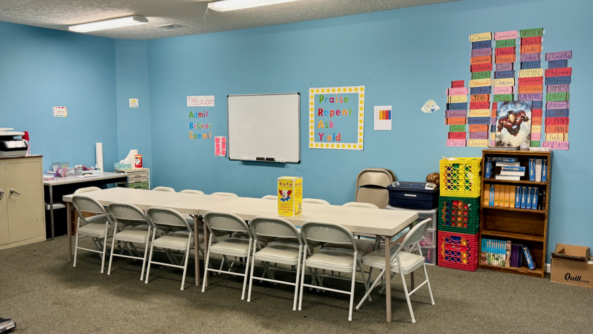
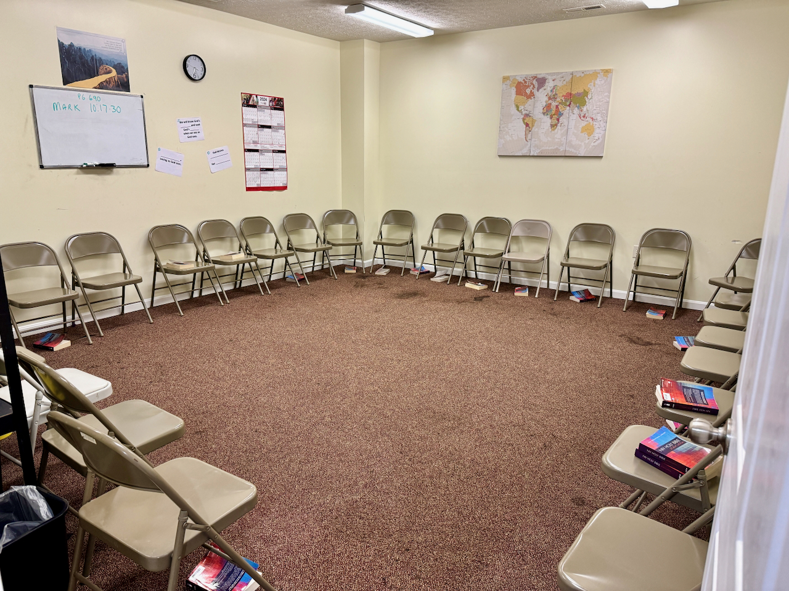

Nursery Ministries
Ages 0-6

Nursery Ministry is dedicated to providing a safe, nurturing, and loving environment for infants and toddlers. Our team of trained caregivers ensures that your little ones are cared for with the utmost attention and love while you attend services and other church activities.

Denise Boesche
Nursery Leader
Children's Ministries
Ages 6-12
Children's Ministry offers engaging and age-appropriate programs for children from preschool through elementary school. Our mission is to instill a love for Jesus and the Bible through interactive lessons, and fun activities. We aim to build a solid spiritual foundation that will support their faith journey for years to come.

Sandy Bramer
Chidren's Church Leader
Youth Ministries
Ages 13-18
Youth Ministry is designed to help middle school and high school students grow in their faith, build strong friendships, and navigate the challenges of adolescence. Through weekly meetings, Bible studies, retreats, and service projects, we create an environment where teens can explore their faith, ask questions, and develop a personal relationship with Jesus.

Wendi Tatum
Youth Ministries Leader
Young Adult Ministries
Ages 18-
Young Adult Ministry provides a vibrant community for college students, young professionals, and early career individuals. Our goal is to support young adults in their spiritual, personal, and professional growth. We offer Bible studies, social events, mentorship opportunities, and service projects to help young adults connect with each other and deepen their faith.

Justin Sneed
Worship Leader, Young Adult Ministries Leader
Adult Ministries
Age is but a number..

Adult Ministry encompasses a variety of programs and activities designed to support adults at all stages of life. From small group Bible studies to fellowship events and volunteer opportunities, our goal is to help adults grow in their faith, build meaningful relationships, and serve the community. We offer specialized programs for singles, couples, and seniors to meet their unique needs.
Food Ministries
Community Blessing Box
Food Giveaway Ministry is committed to addressing food insecurity in our community. We organize regular food drives and distribution events to provide nutritious groceries to individuals and families in need. Our volunteers work tirelessly to ensure that everyone has access to the food they need, embodying the love and compassion of Christ through practical support.
Good Samaritan Cycles
Community Bike Giveaways

Bike Giveaway Ministry aims to provide children and adults with the gift of mobility and freedom. We collect, repair, and distribute bicycles to those who may not have access to reliable transportation. Through our bike giveaways, we hope to promote healthy living, reduce transportation barriers, and bring joy to recipients, reflecting God's love in a tangible way.